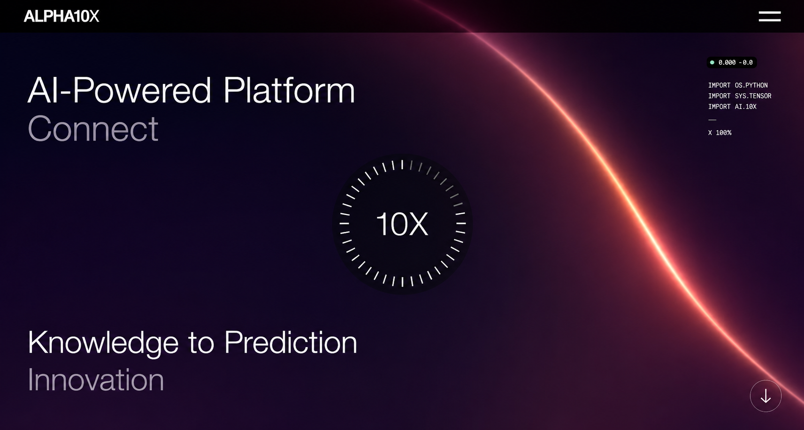

Alpha 10X is an advanced AI-powered platform designed to help businesses automate workflows, generate actionable insights, and enhance decision-making through intelligent technology. Built with a strong focus on performance, scalability, and user experience, the platform empowers organizations to streamline operations, improve productivity, and unlock the full potential of artificial intelligence. Infotive Solutions developed a modern, secure, and future-ready digital solution that delivers seamless functionality while supporting rapid business growth.
Project:
Alpha 10X
Timeline:
Ongoing
Scope:
AI Platform Development, Custom UI/UX Design, Responsive Web Development, User Dashboard, Workflow Automation, API Integration, Authentication & Security, Performance Optimization, Analytics Dashboard, Admin Panel, Scalable Architecture

Developing Alpha 10X required creating an AI-powered platform that balances advanced technology with an intuitive user experience. The challenge was to design a modern digital ecosystem capable of handling intelligent automation, real-time analytics, and scalable workflows while ensuring enterprise-grade performance, security, and reliability.
Alpha 10X demanded a combination of innovative engineering, intelligent system architecture, and modern UI/UX design. Infotive Solutions delivered a future-ready AI platform that empowers businesses to automate operations and accelerate digital transformation.
Infotive Solutions designed and developed Alpha 10X as a scalable AI-powered platform that combines intelligent automation, modern architecture, and exceptional user experience. Our development approach focused on creating a secure, high-performance ecosystem capable of supporting business growth while delivering seamless AI-driven functionality.
Alpha 10X reflects Infotive Solutions' commitment to delivering intelligent digital products that combine innovative engineering, modern design, and scalable AI technologies, enabling businesses to automate operations and drive smarter decision-making.
Alpha 10X demonstrates Infotive Solutions' expertise in building intelligent AI-powered platforms that combine innovative technology, scalable architecture, and exceptional user experiences. By delivering a secure, future-ready solution, we helped create a platform that empowers organizations to automate processes, improve efficiency, and accelerate digital transformation with confidence.